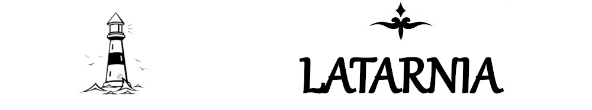

STRONA GŁÓWNA
ŚWIĘTE KSIĘGI
KĄCIK KATOLICKI
KĄCIK FILOZOFICZNY
KĄCIK RÓŻNOŚCI
KĄCIK CZASOPISM
KĄCIK AMATORSKI
LATARNIK
KONTAKT
O tym czym są Adhortacje przeczytasz
tutaj
.
*Franciszek*
O tym kim jest Franciszek przeczytasz
tutaj
.
Querida Amaziona (2020-02-02)
Christus Vivit (2019-03-25)
Gaudete et Exsultate (2018-03-19)
Amoris Laetitia (2016-03-19)
Evangelii Gaudium (2013-11-24)
*Benedykt XVI*
O tym kim jest Benedykt XVI przeczytasz
tutaj
.
Sacramentum Caritatis (2007-02-22)
*Jan Paweł II*
O tym kim jest Jan Paweł II przeczytasz
tutaj
.
Pastores Gregis (2003-10-16)
Ecclesia in Europa (2003-06-26)
Vita Consecrata (1996-03-25)
Ecclesia in Africa (1995-09-14)
Pastores Dabo Vobis (1992-03-25)
Redemptoris Custos (1989-08-15)
Christifideles Laici (1988-12-30)
Redemptionis Donum (1984-03-25)
Reconciliatio et Paenitentia (1982-04-02)
Familiaris Consortio (1981-11-22)
Catechesi Tradendae (1979-10-16)
*Paweł VI*
O tym kim jest Paweł VI przeczytasz
tutaj
.
Evangelii Nuntiandi (1975-12-08)
Gaudete in Domino (1975-05-09)
Quinque Iam Anni (1970-12-08)
Signum Magnum (1967-05-13)
Latarnia 2019 © Wszelkie prawa zastrzeżone.